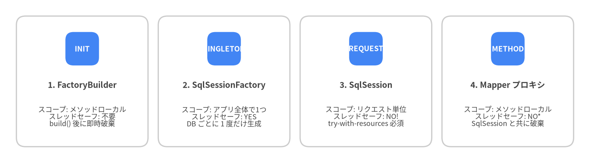
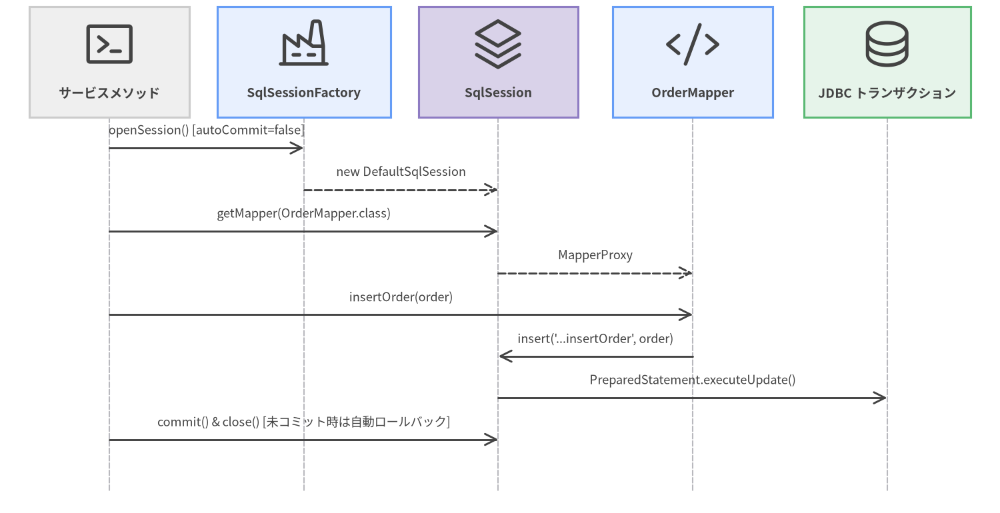

1. インストールと SqlSession ライフサイクル
MyBatis を正しく使いこなす第一歩は、4 つのコアライフサイクルオブジェクト (SqlSessionFactoryBuilder、SqlSessionFactory、SqlSession、Mapper プロキシ) と、それぞれの厳密な スレッドセーフティおよびスコープ境界 を理解することです。
Maven & Gradle の依存関係設定
MyBatis 3 (org.mybatis:mybatis:3.6.0) は JDK 17 以上の環境において 必須の外部ランタイム依存関係がゼロ です。使用するデータベースの JDBC ドライバおよびコネクションプール (HikariCP など) と組み合わせて導入します。
Maven (pom.xml)
<dependencies>
<!-- MyBatis 3 コア -->
<dependency>
<groupId>org.mybatis</groupId>
<artifactId>mybatis</artifactId>
<version>3.6.0</version>
</dependency>
<!-- 本番環境向けコネクションプール (推奨) -->
<dependency>
<groupId>com.zaxxer</groupId>
<artifactId>HikariCP</artifactId>
<version>6.2.1</version>
</dependency>
<!-- JDBC ドライバ例 (PostgreSQL) -->
<dependency>
<groupId>org.postgresql</groupId>
<artifactId>postgresql</artifactId>
<version>42.7.5</version>
</dependency>
</dependencies>
Gradle (build.gradle.kts)
dependencies {
implementation("org.mybatis:mybatis:3.6.0")
implementation("com.zaxxer:HikariCP:6.2.1")
runtimeOnly("org.postgresql:postgresql:42.7.5")
}
スコープとスレッドセーフティの原則
MyBatis 運用で最も重要なルールは、各コアオブジェクトを適切なライフサイクルスコープに配置することです。

Source Code
from drawlib.canvas import save, setup
from drawlib.smartarts import CardList
from drawlib.styles import Colors, Styles
setup(width=144, height=40, dpi=150)
cards = CardList(
style=Styles.Neutral.patch(shape_fill_color=Colors.White),
text_style=Styles.DarkBold.patch(text_size=10.0),
description_style=Styles.Dark.patch(text_size=8.6),
badge_shape="rounded_rect",
badge_style=Styles.PrimaryFlat,
badge_text_style=Styles.WhiteBold.patch(text_size=9.0),
direction="horizontal",
spacing=2.5,
)
cards.add("1. FactoryBuilder", "スコープ: メソッドローカル\nスレッドセーフ: 不要\nbuild() 後に即時破棄", badge_text="INIT")
cards.add("2. SqlSessionFactory", "スコープ: アプリ全体で1つ\nスレッドセーフ: YES\nDB ごとに 1 度だけ生成", badge_text="SINGLETON")
cards.add("3. SqlSession", "スコープ: リクエスト単位\nスレッドセーフ: NO!\ntry-with-resources 必須", badge_text="REQUEST")
cards.add("4. Mapper プロキシ", "スコープ: メソッドローカル\nスレッドセーフ: NO*\nSqlSession と共に破棄", badge_text="METHOD")
cards.draw((4.0, 4.0), width=136.0, height=32.0, align="bottom_left")
save()
| コンポーネント | 推奨スコープ | スレッドセーフか | 理由 |
|---|---|---|---|
SqlSessionFactoryBuilder |
メソッドローカル (起動時) | 対象外 | 設定をパースして SqlSessionFactory を生成するためだけに使用します。 |
SqlSessionFactory |
アプリケーションシングルトン | はい (Yes) | ランタイム中に不変な Configuration レジストリを保持します。リクエストごとに再生成してはいけません。 |
SqlSession |
リクエスト / メソッド (try-with-resources) |
いいえ (No) | ステートフルな Executor、非スレッドセーフな L1 PerpetualCache、および JDBC Connection を保持します。 |
Mapper プロキシ (session.getMapper(...)) |
メソッドローカル | いいえ (No) (DefaultSqlSession 紐付け時) |
呼び出しを背後の SqlSession に直接委譲します (SqlSessionManager や Spring の SqlSessionTemplate 使用時のみスレッドセーフ)。 |
SqlSessionFactory の構築方法
SqlSessionFactory は XML 設定ファイル (mybatis-config.xml) または Java コードから構築できます。
方法 A: XML 設定ファイルから構築 (Resources.getResourceAsReader)
import java.io.Reader;
import org.apache.ibatis.io.Resources;
import org.apache.ibatis.session.SqlSessionFactory;
import org.apache.ibatis.session.SqlSessionFactoryBuilder;
String resource = "org/example/persistence/mybatis-config.xml";
try (Reader reader = Resources.getResourceAsReader(resource)) {
SqlSessionFactory sqlSessionFactory = new SqlSessionFactoryBuilder().build(reader);
}
方法 B: Java コードによるプログラマティック構築 (HikariCP + Mappers)
import com.zaxxer.hikari.HikariConfig;
import com.zaxxer.hikari.HikariDataSource;
import javax.sql.DataSource;
import org.apache.ibatis.mapping.Environment;
import org.apache.ibatis.session.Configuration;
import org.apache.ibatis.session.LocalCacheScope;
import org.apache.ibatis.session.SqlSessionFactory;
import org.apache.ibatis.session.SqlSessionFactoryBuilder;
import org.apache.ibatis.transaction.jdbc.JdbcTransactionFactory;
HikariConfig hikari = new HikariConfig();
hikari.setJdbcUrl("jdbc:postgresql://localhost:5432/blog");
hikari.setUsername("app_user");
hikari.setPassword(System.getenv("DB_PASSWORD"));
DataSource dataSource = new HikariDataSource(hikari);
Environment environment = new Environment("production", new JdbcTransactionFactory(), dataSource);
Configuration configuration = new Configuration(environment);
configuration.setMapUnderscoreToCamelCase(true);
configuration.setLocalCacheScope(LocalCacheScope.STATEMENT); // マルチインスタンス環境での推奨設定
configuration.addMappers("com.example.blog.mapper"); // パッケージ内の全 Mapper と XML を一括登録
SqlSessionFactory sqlSessionFactory = new SqlSessionFactoryBuilder().build(configuration);
try-with-resources による実行と自動ロールバック保証
SqlSession は java.lang.AutoCloseable を実装しています。デフォルトでは sqlSessionFactory.openSession() は autoCommit = false でセッションを開きます。session.commit() を呼ばずに try-with-resources ブロックを抜けた場合、MyBatis は未コミットの変更を 自動的にロールバック してからコネクションをプールへ返却します。

Source Code
from drawlib.canvas import save, setup
from drawlib.diagrams.sequence import Participant, PhosphorIcon, SequenceDiagram
from drawlib.styles import Styles
setup(width=144, height=74, dpi=150)
sd = SequenceDiagram(
node_style=Styles.Dark,
node_text_style=Styles.DarkBold.patch(text_size=9.2),
edge_style=Styles.Dark.patch(line_width=1.4),
edge_text_style=Styles.Dark.patch(text_size=8.8),
node_card_style=Styles.Neutral,
col_width=28.0,
step_y=6.0,
)
p_app = sd.add(Participant("サービスメソッド", icon=PhosphorIcon.TERMINAL_WINDOW, width=23, card_style=Styles.Neutral))
p_fac = sd.add(Participant("SqlSessionFactory", icon=PhosphorIcon.FACTORY, width=25, card_style=Styles.PrimaryNeutral))
p_ses = sd.add(Participant("SqlSession", icon=PhosphorIcon.STACK, width=23, card_style=Styles.SecondaryNeutral))
p_map = sd.add(Participant("OrderMapper", icon=PhosphorIcon.CODE, width=23, card_style=Styles.PrimaryNeutral))
p_db = sd.add(Participant("JDBC トランザクション", icon=PhosphorIcon.DATABASE, width=24, card_style=Styles.SuccessNeutral))
p_app.request(p_fac, "openSession() [autoCommit=false]")
p_fac.reply(p_ses, "new DefaultSqlSession")
p_app.request(p_ses, "getMapper(OrderMapper.class)")
p_ses.reply(p_map, "MapperProxy")
p_app.request(p_map, "insertOrder(order)")
p_map.request(p_ses, "insert('...insertOrder', order)")
p_ses.request(p_db, "PreparedStatement.executeUpdate()")
p_app.request(p_ses, "commit() & close() [未コミット時は自動ロールバック]")
sd.draw(xy=(72, 37), align="center")
save()
// 更新系トランザクションの定石パターン: 成功時は明示的に session.commit() を呼ぶ
try (SqlSession session = sqlSessionFactory.openSession()) {
OrderMapper mapper = session.getMapper(OrderMapper.class);
mapper.insertOrder(order);
mapper.insertOrderItems(order.items());
session.commit(); // 両方の INSERT をアトミックにコミット (途中で例外が発生した場合は close() が自動ロールバック)
}